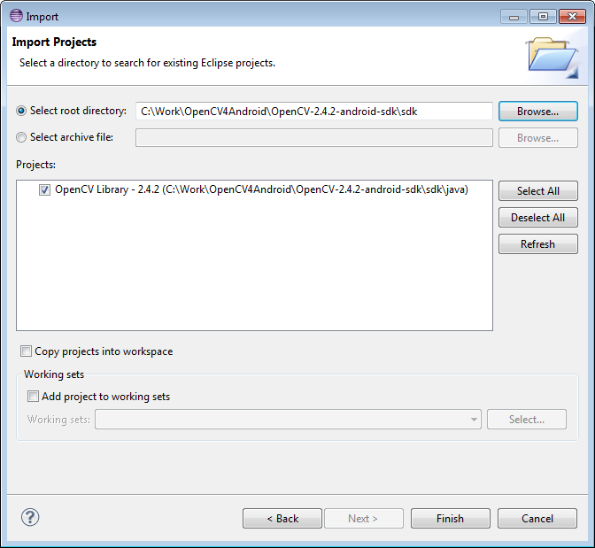
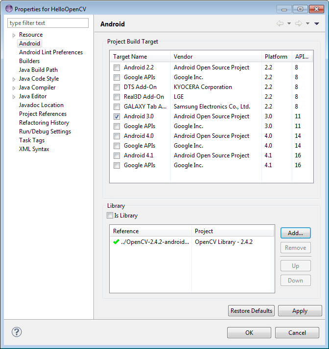

Android Development with OpenCV¶
This tutorial has been created to help you use OpenCV library within your Android project.
This guide was written with Windows 7 in mind, though it should work with any other OS supported by OpenCV4Android SDK.
This tutorial assumes you have the following installed and configured:
JDK
Android SDK and NDK
Eclipse IDE
ADT and CDT plugins for Eclipse
If you need help with anything of the above, you may refer to our Introduction into Android Development guide.
This tutorial also assumes you have OpenCV4Android SDK already installed on your development machine and OpenCV Manager on your testing device correspondingly. If you need help with any of these, you may consult our OpenCV4Android SDK tutorial.
If you encounter any error after thoroughly following these steps, feel free to contact us via OpenCV4Android discussion group or OpenCV Q&A forum . We’ll do our best to help you out.
Using OpenCV Library Within Your Android Project¶
In this section we will explain how to make some existing project to use OpenCV. Starting with 2.4.2 release for Android, OpenCV Manager is used to provide apps with the best available version of OpenCV. You can get more information here: Android OpenCV Manager and in these slides.
Java¶
Application Development with Async Initialization¶
Using async initialization is a recommended way for application development. It uses the OpenCV Manager to access OpenCV libraries externally installed in the target system.
Add OpenCV library project to your workspace. Use menu File -> Import -> Existing project in your workspace.
Press Browse button and locate OpenCV4Android SDK (
OpenCV-2.4.13-android-sdk/sdk).In application project add a reference to the OpenCV Java SDK in Project -> Properties -> Android -> Library -> Add select
OpenCV Library - 2.4.13.
In most cases OpenCV Manager may be installed automatically from Google Play. For the case, when Google Play is not available, i.e. emulator, developer board, etc, you can install it manually using adb tool. See How to select the proper version of OpenCV Manager for details.
There is a very base code snippet implementing the async initialization. It shows basic principles. See the “15-puzzle” OpenCV sample for details.
1 2 3 4 5 6 7 8 9 10 11 12 13 14 15 16 17 18 19 20 21 22 23 24 25 26 27 28 | public class Sample1Java extends Activity implements CvCameraViewListener {
private BaseLoaderCallback mLoaderCallback = new BaseLoaderCallback(this) {
@Override
public void onManagerConnected(int status) {
switch (status) {
case LoaderCallbackInterface.SUCCESS:
{
Log.i(TAG, "OpenCV loaded successfully");
mOpenCvCameraView.enableView();
} break;
default:
{
super.onManagerConnected(status);
} break;
}
}
};
@Override
public void onResume()
{
super.onResume();
OpenCVLoader.initAsync(OpenCVLoader.OPENCV_VERSION_2_4_6, this, mLoaderCallback);
}
...
}
|
It this case application works with OpenCV Manager in asynchronous fashion. OnManagerConnected
callback will be called in UI thread, when initialization finishes. Please note, that it is not
allowed to use OpenCV calls or load OpenCV-dependent native libs before invoking this callback.
Load your own native libraries that depend on OpenCV after the successful OpenCV initialization.
Default BaseLoaderCallback implementation treat application context as Activity and calls
Activity.finish() method to exit in case of initialization failure. To override this behavior
you need to override finish() method of BaseLoaderCallback class and implement your own
finalization method.
Application Development with Static Initialization¶
According to this approach all OpenCV binaries are included into your application package. It is designed mostly for development purposes. This approach is deprecated for the production code, release package is recommended to communicate with OpenCV Manager via the async initialization described above.
Add the OpenCV library project to your workspace the same way as for the async initialization above. Use menu File -> Import -> Existing project in your workspace, press Browse button and select OpenCV SDK path (
OpenCV-2.4.13-android-sdk/sdk).In the application project add a reference to the OpenCV4Android SDK in Project -> Properties -> Android -> Library -> Add select
OpenCV Library - 2.4.13;
If your application project doesn’t have a JNI part, just copy the corresponding OpenCV native libs from
<OpenCV-2.4.13-android-sdk>/sdk/native/libs/<target_arch>to your project directory to folderlibs/<target_arch>.In case of the application project with a JNI part, instead of manual libraries copying you need to modify your
Android.mkfile: add the following two code lines after the"include $(CLEAR_VARS)"and before"include path_to_OpenCV-2.4.13-android-sdk/sdk/native/jni/OpenCV.mk"1 2
OPENCV_CAMERA_MODULES:=on OPENCV_INSTALL_MODULES:=on
The result should look like the following:
1 2 3 4 5 6
include $(CLEAR_VARS) # OpenCV OPENCV_CAMERA_MODULES:=on OPENCV_INSTALL_MODULES:=on include ../../sdk/native/jni/OpenCV.mk
After that the OpenCV libraries will be copied to your application
libsfolder during the JNI build.vEclipse will automatically include all the libraries from the
libsfolder to the application package (APK).The last step of enabling OpenCV in your application is Java initialization code before calling OpenCV API. It can be done, for example, in the static section of the
Activityclass:1 2 3 4 5
static { if (!OpenCVLoader.initDebug()) { // Handle initialization error } }
If you application includes other OpenCV-dependent native libraries you should load them after OpenCV initialization:
1 2 3 4 5 6 7 8
static { if (!OpenCVLoader.initDebug()) { // Handle initialization error } else { System.loadLibrary("my_jni_lib1"); System.loadLibrary("my_jni_lib2"); } }
Native/C++¶
To build your own Android application, using OpenCV as native part, the following steps should be taken:
You can use an environment variable to specify the location of OpenCV package or just hardcode absolute or relative path in the
jni/Android.mkof your projects.The file
jni/Android.mkshould be written for the current application using the common rules for this file.For detailed information see the Android NDK documentation from the Android NDK archive, in the file
<path_where_NDK_is_placed>/docs/ANDROID-MK.html.The following line:
include C:\Work\OpenCV4Android\OpenCV-2.4.13-android-sdk\sdk\native\jni\OpenCV.mkShould be inserted into the
jni/Android.mkfile after this line:include $(CLEAR_VARS)Several variables can be used to customize OpenCV stuff, but you don’t need to use them when your application uses the async initialization via the OpenCV Manager API (It is not recommended since OpenCV 2.4.13).
Note
These variables should be set before the
"include .../OpenCV.mk"line:OPENCV_INSTALL_MODULES:=on
Copies necessary OpenCV dynamic libs to the project
libsfolder in order to include them into the APK.OPENCV_CAMERA_MODULES:=off
Skip native OpenCV camera related libs copying to the project
libsfolder.OPENCV_LIB_TYPE:=STATIC
Perform static linking with OpenCV. By default dynamic link is used and the project JNI lib depends on
libopencv_java.so.The file
Application.mkshould exist and should contain lines:APP_STL := gnustl_static APP_CPPFLAGS := -frtti -fexceptions
Also, the line like this one:
APP_ABI := armeabi-v7a
Should specify the application target platforms.
In some cases a linkage error (like
"In function 'cv::toUtf16(std::basic_string<...>... undefined reference to 'mbstowcs'") happens when building an application JNI library, depending on OpenCV. The following line in theApplication.mkusually fixes it:APP_PLATFORM := android-9
Either use manual
ndk-buildinvocation or setup Eclipse CDT Builder to build native JNI lib before (re)building the Java part and creating an APK.
Hello OpenCV Sample¶
Here are basic steps to guide you trough the process of creating a simple OpenCV-centric application. It will be capable of accessing camera output, processing it and displaying the result.
Open Eclipse IDE, create a new clean workspace, create a new Android project
Set name, target, package and
minSDKVersionaccordingly. The minimal SDK version for build with OpenCV4Android SDK is 11. Minimal device API Level (for application manifest) is 8.Allow Eclipse to create default activity. Lets name the activity
HelloOpenCvActivity.Choose Blank Activity with full screen layout. Lets name the layout
HelloOpenCvLayout.Import OpenCV library project to your workspace.
Reference OpenCV library within your project properties.
Edit your layout file as xml file and pass the following layout there:
1 2 3 4 5 6 7 8 9 10 11 12 13 14 15
<LinearLayout xmlns:android="http://schemas.android.com/apk/res/android" xmlns:tools="http://schemas.android.com/tools" xmlns:opencv="http://schemas.android.com/apk/res-auto" android:layout_width="match_parent" android:layout_height="match_parent" > <org.opencv.android.JavaCameraView android:layout_width="fill_parent" android:layout_height="fill_parent" android:visibility="gone" android:id="@+id/HelloOpenCvView" opencv:show_fps="true" opencv:camera_id="any" /> </LinearLayout>
Add the following permissions to the
AndroidManifest.xmlfile:1 2 3 4 5 6 7 8
</application> <uses-permission android:name="android.permission.CAMERA"/> <uses-feature android:name="android.hardware.camera" android:required="false"/> <uses-feature android:name="android.hardware.camera.autofocus" android:required="false"/> <uses-feature android:name="android.hardware.camera.front" android:required="false"/> <uses-feature android:name="android.hardware.camera.front.autofocus" android:required="false"/>
Set application theme in AndroidManifest.xml to hide title and system buttons.
1 2 3 4
<application android:icon="@drawable/icon" android:label="@string/app_name" android:theme="@android:style/Theme.NoTitleBar.Fullscreen" >
Add OpenCV library initialization to your activity. Fix errors by adding requited imports.
1 2 3 4 5 6 7 8 9 10 11 12 13 14 15 16 17 18 19 20 21 22 23
private BaseLoaderCallback mLoaderCallback = new BaseLoaderCallback(this) { @Override public void onManagerConnected(int status) { switch (status) { case LoaderCallbackInterface.SUCCESS: { Log.i(TAG, "OpenCV loaded successfully"); mOpenCvCameraView.enableView(); } break; default: { super.onManagerConnected(status); } break; } } }; @Override public void onResume() { super.onResume(); OpenCVLoader.initAsync(OpenCVLoader.OPENCV_VERSION_2_4_6, this, mLoaderCallback); }
Defines that your activity implements
CvCameraViewListener2interface and fix activity related errors by defining missed methods. For this activity defineonCreate,onDestroyandonPauseand implement them according code snippet bellow. Fix errors by adding requited imports.1 2 3 4 5 6 7 8 9 10 11 12 13 14 15 16 17 18 19 20 21 22 23 24 25 26 27 28 29 30 31 32 33 34 35 36
private CameraBridgeViewBase mOpenCvCameraView; @Override public void onCreate(Bundle savedInstanceState) { Log.i(TAG, "called onCreate"); super.onCreate(savedInstanceState); getWindow().addFlags(WindowManager.LayoutParams.FLAG_KEEP_SCREEN_ON); setContentView(R.layout.HelloOpenCvLayout); mOpenCvCameraView = (CameraBridgeViewBase) findViewById(R.id.HelloOpenCvView); mOpenCvCameraView.setVisibility(SurfaceView.VISIBLE); mOpenCvCameraView.setCvCameraViewListener(this); } @Override public void onPause() { super.onPause(); if (mOpenCvCameraView != null) mOpenCvCameraView.disableView(); } public void onDestroy() { super.onDestroy(); if (mOpenCvCameraView != null) mOpenCvCameraView.disableView(); } public void onCameraViewStarted(int width, int height) { } public void onCameraViewStopped() { } public Mat onCameraFrame(CvCameraViewFrame inputFrame) { return inputFrame.rgba(); }
Run your application on device or emulator.
Lets discuss some most important steps. Every Android application with UI must implement Activity
and View. By the first steps we create blank activity and default view layout. The simplest
OpenCV-centric application must implement OpenCV initialization, create its own view to show
preview from camera and implements CvCameraViewListener2 interface to get frames from camera and
process it.
First of all we create our application view using xml layout. Our layout consists of the only
one full screen component of class org.opencv.android.JavaCameraView. This class is
implemented inside OpenCV library. It is inherited from CameraBridgeViewBase, that extends
SurfaceView and uses standard Android camera API. Alternatively you can use
org.opencv.android.NativeCameraView class, that implements the same interface, but uses
VideoCapture class as camera access back-end. opencv:show_fps="true" and
opencv:camera_id="any" options enable FPS message and allow to use any camera on device.
Application tries to use back camera first.
After creating layout we need to implement Activity class. OpenCV initialization process has
been already discussed above. In this sample we use asynchronous initialization. Implementation of
CvCameraViewListener interface allows you to add processing steps after frame grabbing from
camera and before its rendering on screen. The most important function is onCameraFrame. It is
callback function and it is called on retrieving frame from camera. The callback input is object
of CvCameraViewFrame class that represents frame from camera.
Note
Do not save or use CvCameraViewFrame object out of onCameraFrame callback. This object
does not have its own state and its behavior out of callback is unpredictable!
It has rgba() and gray() methods that allows to get frame as RGBA and one channel gray scale
Mat respectively. It expects that onCameraFrame function returns RGBA frame that will be
drawn on the screen.
Help and Feedback
You did not find what you were looking for?- Ask a question on the Q&A forum.
- If you think something is missing or wrong in the documentation, please file a bug report.